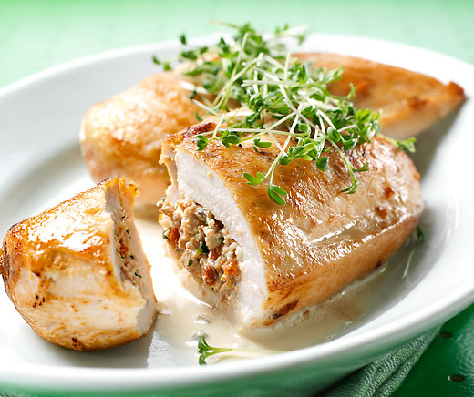

Gefülltes Pouletbrüstli
Nährwert pro Person:
- ca. 30 Minuten Zubereitungszeit
- 22 g Fett
- 41 g Eiweiß
- 2 g Kohlenhydrate
- 1526 kJ (364 kcal)
Zutaten:
- 4 Pouletbrüstli (je ca. 150 g)
- 125 g PfefferFrischkäse (z. B. Cantadou)
- 50 g Rohschinken in feinen Streifen
- 3 EL Kresse, grob gehackt
- 50 g getrocknete Tomaten in Öl, abgetropft, fein gehackt
- Bratbutter zum Braten
- 0.5 TL Salz
- wenig Pfeffer
- 3 EL Wasser
- 3 EL Rahm
Zubereitung:
-
Die Hälfte des Frischkäses mit dem Rohschinken, der Kresse und den Tomaten mischen, restlichen Frischkäse beiseite stellen.

-
Pouletbrüstli damit füllen, Öffnung mit Zahnstochern verschließen.
-
Ofen auf 60 Grad vorheizen, Platte und Teller vorwärmen. Bratbutter in einer beschichteten Bratpfanne heiß werden lassen, Hitze reduzieren. Pouletbrüstli beidseitig je ca. 4 Min. braten, herausnehmen, würzen, warm stellen.
-
Bratfett auftupfen, beiseite gestellten Frischkäse, Wasser und Rahm in derselben Pfanne verrühren, Sauce nur noch warm werden lassen, zu den Pouletbrüstli servieren.
-
Das Poultetbrüstli mit der flachen Hand auf ein Brett drücken, mit einem spitzen Messer in der Mitte der Längsseite vorsichtig eine Tasche einschneiden.
Dazu passt:
Reis